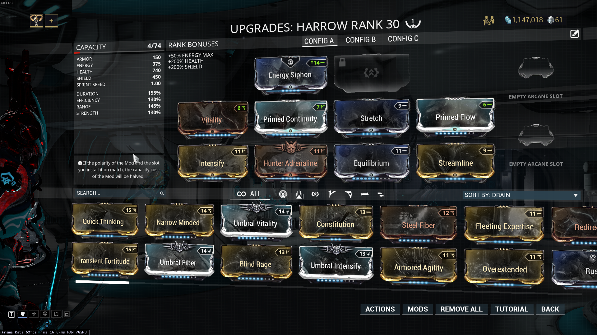
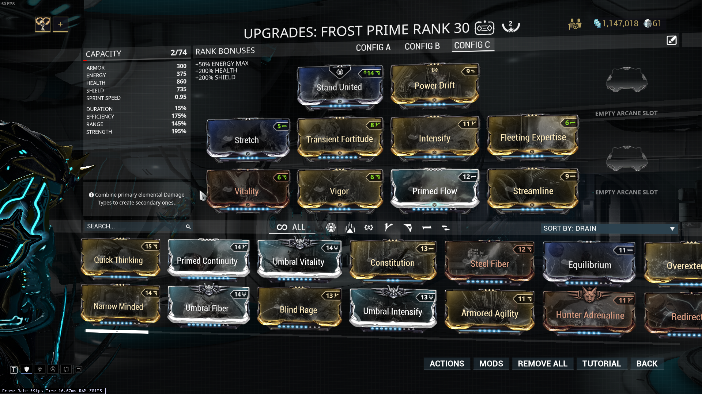

For warframes, there is usually no right way to mod them. Instead of modding for specific attributes, like status chance or damage, you mod for abilities. Each warframe has four built-in abilities, bound to the one, two three and four keys, and usually called by the warframe and key they correspond to. For example, the warframe "Trinity" has a very powerful ability bound to the 2 key that helps regenerate energy for her entire team. If someone is playing trinity, then they would refer to using this ability as "using trinity's 2." This is the way that I'm going to refer to abilities, because it's community standard.
There is an essential mod for warframes, and it's vitality. Increasing your health is just required for any warframe, especially when you're just getting into the game.
I should also note that, if you simply put all the ability enhancement mods on your warframe, it will get a good result, and honestly that might be better if you're new.
When modding a warframe, first choose the ability or abilities that you want to mod for. Sometimes, when you mod for one ability, you can get benefits for others at the same time. First, figure out what abilities are bad. THere isn't any rule to this, just look it up, it sucks. Then, choose an ability that you like. I like frost's 4, so that's the one I'm going to be using. It can also be modded for a bunch of different things, so I can show how that works.
The basic idea when modding for an ability is to mod for its strengths. If the ability already does alot of damage, make it do more. If it lasts for a duration, make it longer. If you want to make it spammable, make it cost less energy. There is no right way to mod an ability. Choose a job, and make the ability do that job. That's the key.
Using frost as an example, let's first talk about his four. In a 360 degree area of effect, he freezes and does damage to enemies. The important things to note about this ability, and every ability, are how different mods affect them. If th strength of the warframe is increased, the ability does more damage, or the affect is otherwise increased if it doesn't deal damage. Mods that increase efficiency will decrease the energy the ability costs. Mods that increase range will increase the range, or the aoe, and lastly mods that increase duration increase the time the ability is active. Fairly simple.
So, we can mod frost's fourth ability for four different attributes, but we need to figure out which ones are actually useful. Strength may increase damage, but does the ability do enough damage to make it worth increasing in the first place? For frost, the answer is yes, and the answer si also yes for increasing the duration, to make it a crowd control ability.
The hardest part of modding a warframe is deciding what abilities are actually worth modding for. because Warframe is so badly balanced, it's a crapshoot when you're starting out. The starting warframes usually have at least one good ability. I would recommend putting mostly duration mods on Volt, and mostly power mods on Excalibur, but they can both be modded for the other. If you picked MAG, then rest in peace and try to get yourself a Rhino quick.